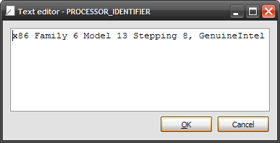
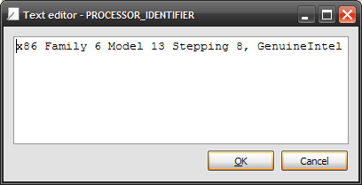

The variable explorer shows the globals() namespace contents (i.e. all global object references) of the current console: it supports both the Console (Python or IPython interpreter running in a remote process) and the Internal Console.
The following screenshots show some interesting features such as editing lists, strings, dictionaries, NumPy arrays, or plotting/showing NumPy arrays data.
 



The default variable explorer configuration allows to browse global variables without slowing the console even with very large NumPy arrays, lists or dictionaries. The trick is to truncate values, to hide collection contents (i.e. showing ‘<list @ address>’ instead of list contents) and to not show mininum and maximum values for NumPy arrays (see context menu options on the screenshot at the top of this page).
However, most of the time, choosing the opposite options won’t have too much effect on console’s performance: